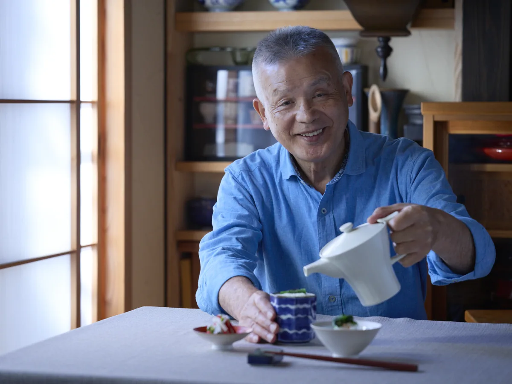
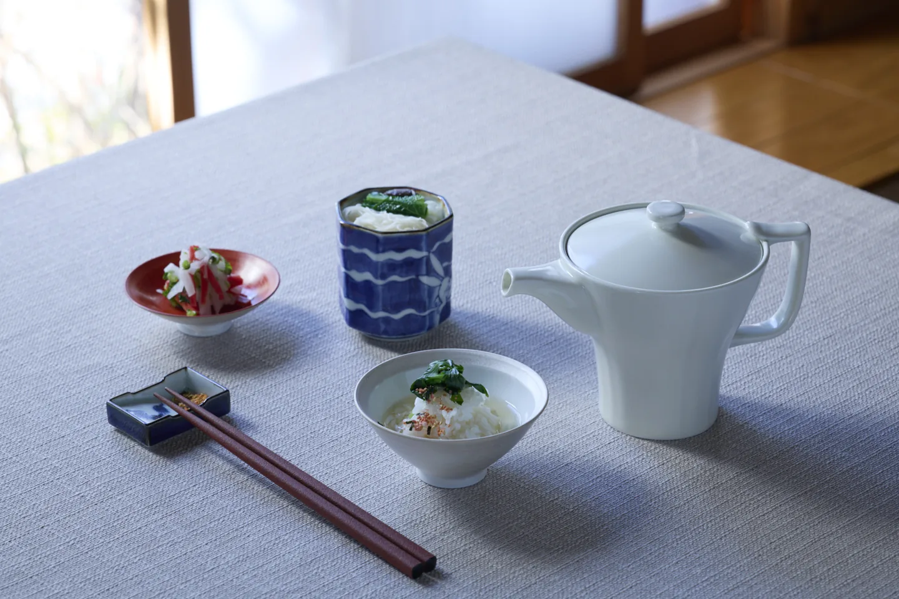
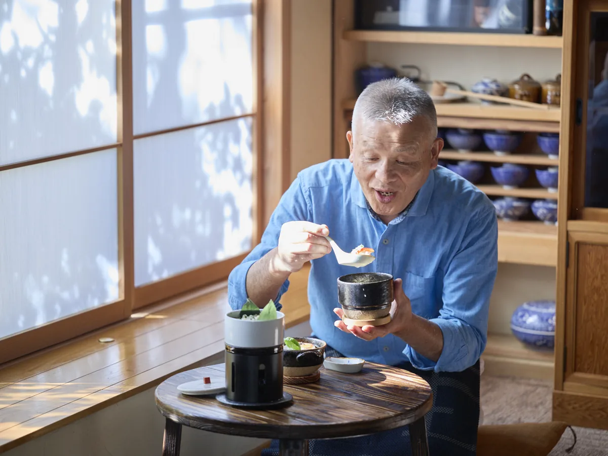
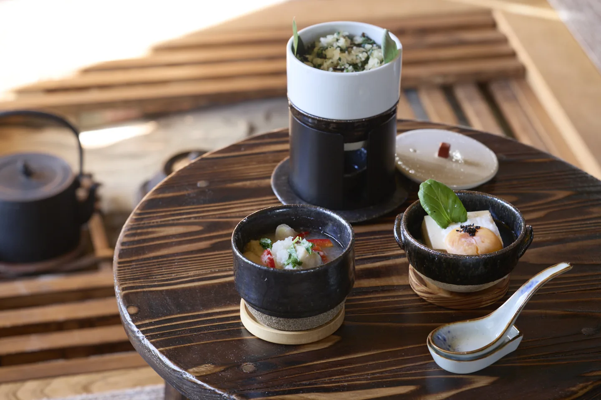
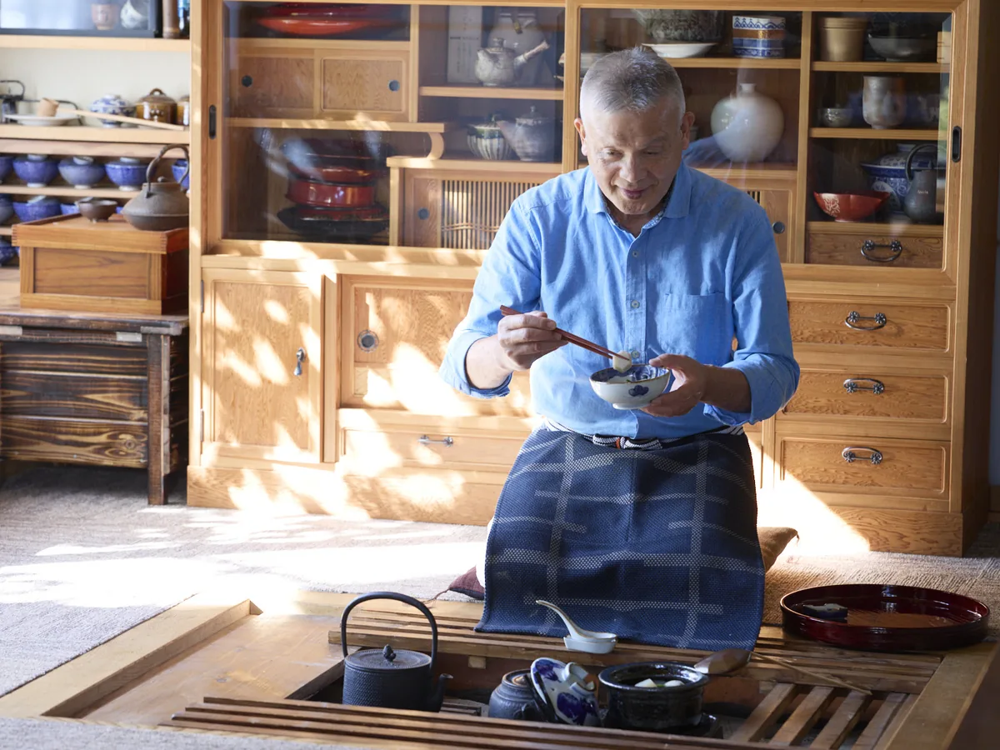
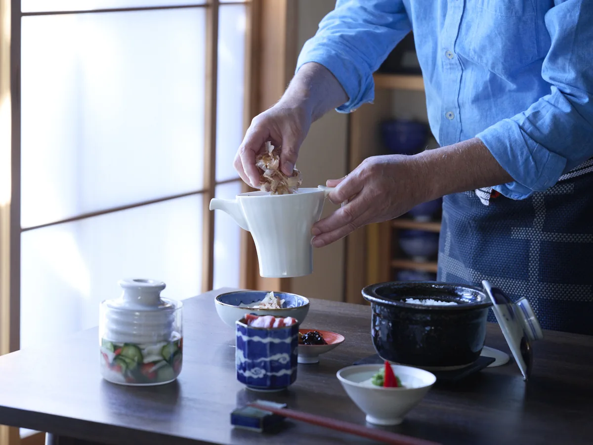
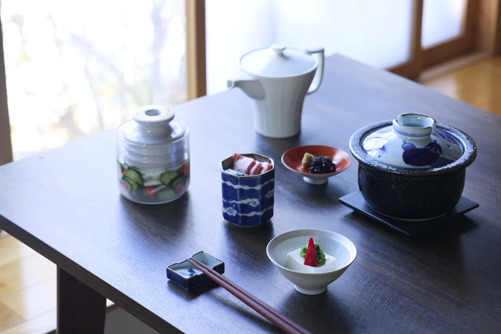
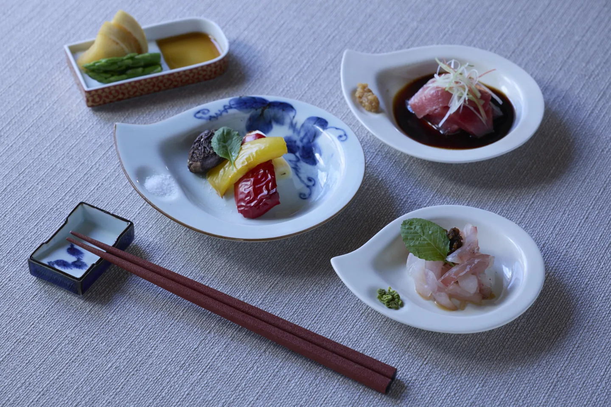
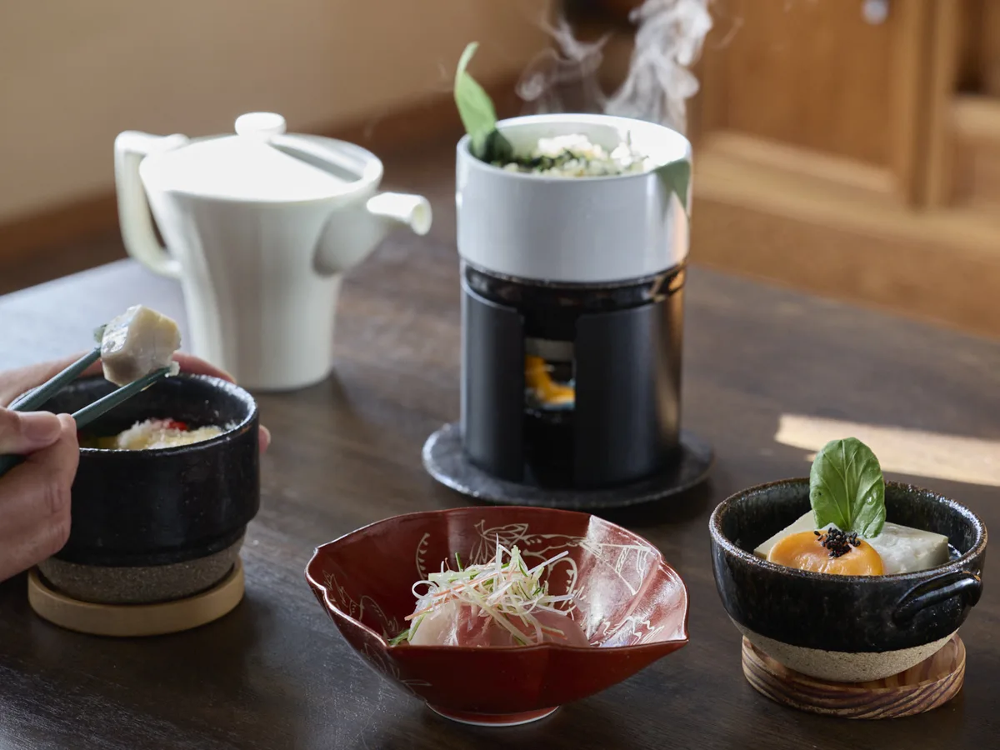
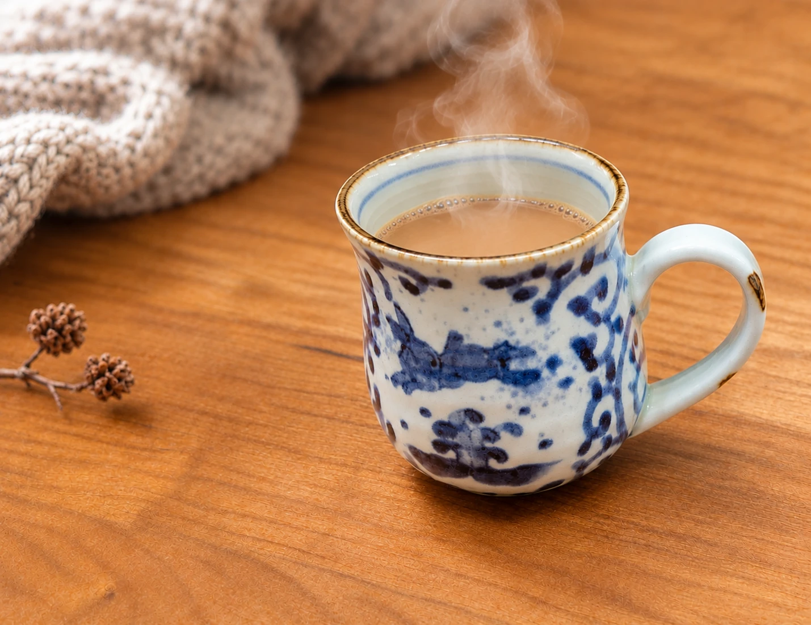

STORY
和にきづくブランド「和季づき」
三者の長い付き合いから生まれた、ブランドのはじまりのお話です。
だしポットの誕生
野﨑洋光は福泉窯から、磁器の特長の一つは熱が伝わりやすいことだと聞いていました。
「これだ」と野﨑は思いました。
約1分で、雑味のないだしがとれる「だしポット」の誕生です。
季節は、いつもの食卓にあった
其の一
出汁で愉しむ季づき

出汁がとれるのを待つあいだ、今日はなににしましょうか。
お吸い物、温かいおひたし、出汁茶漬け……。
出汁を囲んで迷う、ちいさな贅沢の食卓。

うつわの中身・大きさ・お手入れ、ご購入はこちらから
其の二
自由を愉しむ季づき

小さな火をともしたら、今夜はなにをのせましょうか。
ひとり分の小鍋、蒸し物、熱々のグラタン……。
火を囲んでほっとする、自由な食卓。

うつわの中身・大きさ・お手入れ、ご購入はこちらから
其の三
時間を見る季づき

鍋をそのまま食卓へ。今日はなにを炊きましょうか。
炊きたてのご飯、寄せ鍋、ことこと煮魚……。
煮えるのを待つ時間まで、ごちそうの食卓。

うつわの中身・大きさ・お手入れ、ご購入はこちらから
其の四
身体が喜ぶ季づき

旬の野菜を浅く漬けたら、なにと合わせましょうか。
出汁をかけて、鍋に添えて、そのままつまんで……。
彩りに心はずむ、身体がよろこぶ食卓。

うつわの中身・大きさ・お手入れ、ご購入はこちらから
其の五
あしらいで愉しむ季づき

丘と海のある、小さな千代口。なにをのせましょうか。
柚子胡椒、塩とオリーブオイル、いつもの醤油……。
ひと皿のわきで迷う、遊びごころの食卓。

うつわの中身・大きさ・お手入れ、ご購入はこちらから
其の六
もてなしを愉しむ季づき

グラタンが焼けるのを待つあいだ、もう一品はなににしましょうか。
蒸し物、和え物、旬のお造り……。
和と洋が並んで迷う、にぎやかな食卓。

うつわの中身・大きさ・お手入れ、ご購入はこちらから
贈りものとして
商品そのものの魅力を大切に、余計な飾りを加えない、シンプルなパッケージでお届けします。
商品の背景にあるストーリーや、小さなエピソードを綴ったメッセージカードを添えます。
QRコードから公式サイトへ。お贈りしたあとも、作り手の想いに触れていただけます。
ショップは、別のページで開きます。
和にきづくブランド「和季づき」
三者の長い付き合いから生まれた、ブランドのはじまりのお話です。
だしポットの誕生
野﨑洋光は福泉窯から、磁器の特長の一つは熱が伝わりやすいことだと聞いていました。
「これだ」と野﨑は思いました。
約1分で、雑味のないだしがとれる「だしポット」の誕生です。
ともに歩んできたからこそのご提案
こまめな手間を表現できる本物のうつわたちです。
今の暮らしの中にも和を思い出す瞬間を届けます。
和の季節の気付き 和季づきをご案内します。
次の季節へ
 春
春 夏
夏 秋
秋
冬暮らしの、和に気づくきっかけ